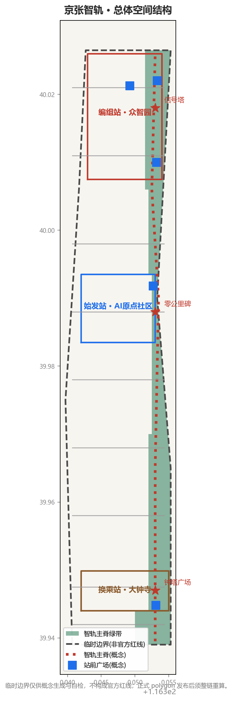
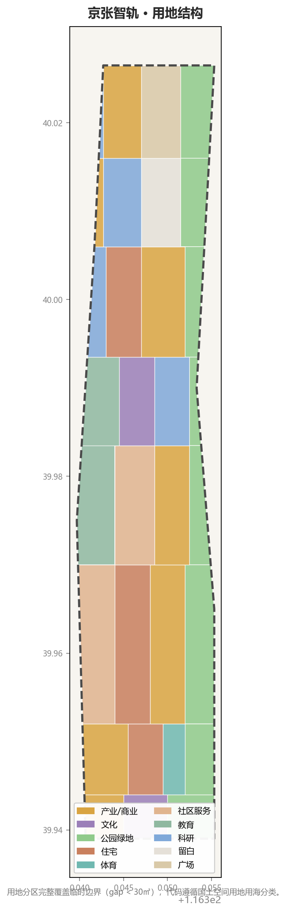
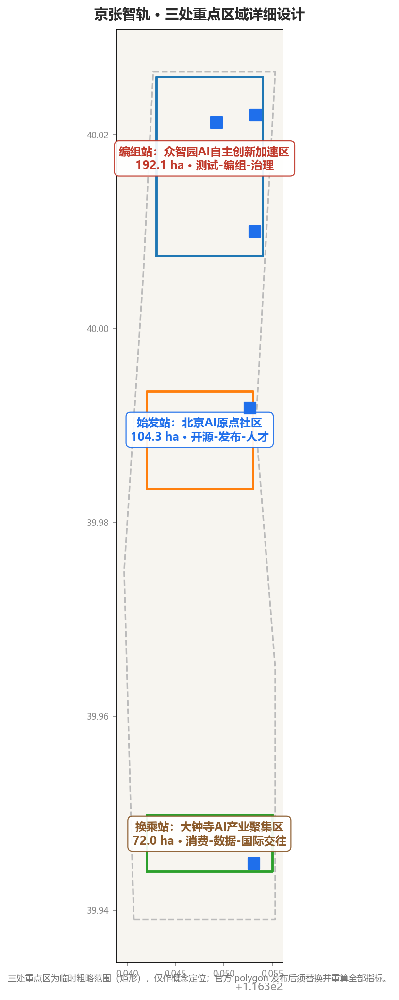
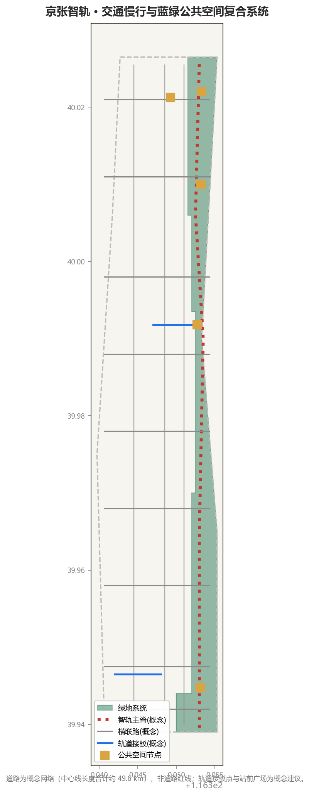
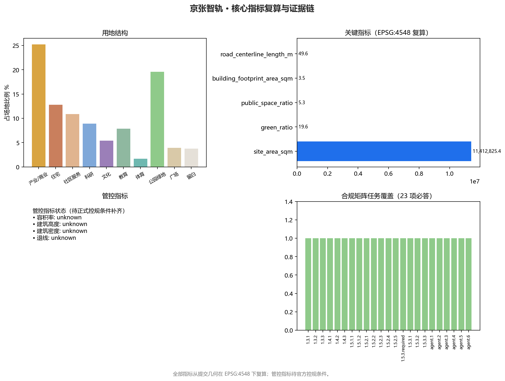

边界声明：本方案全部几何基于仓库登记的临时粗略边界（provisional constraint，EPSG:4326 生成 / EPSG:4548 复算），仅用于概念生成、展示与自检，不构成官方红线、审批依据或精确面积依据；正式 polygon 发布后须整链重算。
总览地图

图1 总体空间结构：智轨主脊串联编组站（众智园）、始发站（AI原点社区）、换乘站（大钟寺）三处重点区，两翼与道岔缝合系统组织创新带。

图2 用地分区：用地分区完整覆盖临时边界（gap < 30㎡），遵循国土空间用地用海分类（05/0701/0702/0802/0803/0804/0805/1401/1403/16）。
三层范围
统筹研究范围 43.6 km²（产业生态与未来城市）→ 总体设计范围 11.4 km²（一脊三站两翼）→ 重点区域范围 368.4 ha（三站详细设计）。
重点区域

图3 重点区域：编组站（众智园 192.1ha · 测试-编组-治理）、始发站（原点社区 104.3ha · 开源-发布-人才）、换乘站（大钟寺 72.0ha · 消费-数据-国际交往）。

图4 交通慢行：智轨主脊（概念）与横联路网组织慢行与微循环；轨道接驳点与站前广场为概念建议。
用地分区与建筑
用地以产业/科研（25.2%）、居住与社区服务（23.7%）、绿地（19.6%）为主；概念建筑基底 411 处（3.51M m²）仅用于检验空间量级。蓝绿公共空间合计约 24.9%。
交通慢行与蓝绿公共空间
智轨主脊慢行 + 横联路微循环 + 轨道接驳；绿地约 223.6 万㎡（19.6%）、公共空间约 60.7 万㎡（5.3%）。
AI 场景
| 场景 | 空间载体 | 类型 |
|---|---|---|
| 原点开源发布厅 | 原点社区广场 | 公共服务 |
| 编组测试场 | 众智园留白用地 | 产业测试验证 |
| 试车场户外验证 | 小月河场景赋能翼 | 产业测试验证 |
| 信号所治理沙盒 | 中关村科技服务翼 | 产业测试验证 |
| 智能原生消费街 | 大钟寺商业用地 | 消费体验 |
| 智轨主脊 AI 慢行导航 | 主脊沿线 | 公共体验 |
完整 12 张场景卡（含 3 张产业测试验证场景）见 proposal.md「AI 创新生态」章节。
核心指标

图5 指标复算：全部空间指标在 EPSG:4548 下从提交几何复算；管控指标待正式控规条件。
11.41
场地面积 km²
19.6%
绿地率
5.3%
公共空间率
3.51M
建筑基底 m²
49.6km
道路中心线
12+3
场景卡/测试场景
5
用户画像
3
朝圣地标
更新项目
9 项更新项目：原点广场、成果转化街、编组测试场、清河界面、大钟寺四象限连通、智能原生消费街区、主脊慢行缝合、信号所治理沙盒、里程碑体系（近期/中期/长期三阶段）。
任务覆盖（compliance_matrix · 23 项必答）
| 任务 | 响应章节 | 证据 |
|---|---|---|
| 公告 1.3 / 1.4 / 1.5（17 项） | 三层范围 · 统筹研究 · 总体设计 · 重点区域 | compliance_matrix.json |
| agent.1 总体概念与命名 | agent 任务响应 | 京张智轨 · SILICON IRONWAY · 人字形 Logo 方向 |
| agent.2 全栈创新体系 | 统筹研究 · 生态图谱 | 8 个全球案例 · 始发-编组-换乘回路 |
| agent.3 场景与活力城市 | AI 创新生态 | 12 场景卡（含 3 测试场景）· 5 画像 |
| agent.4 公共空间与地标 | 蓝绿空间 | 3 朝圣地标 · 里程碑体系 · 组件库 |
| agent.5 文化叙事 | agent 任务响应 | 一条铁轨的三次发车 |
| agent.6 活动与运营 | 更新与分期 | 年度活动日历 · 社区运营 · 转化路径 |
标准响应（standard_matrix · 9 项）
| 标准 | 状态 | 响应方式 |
|---|---|---|
| 资格预审公告 | addressed | 三层范围与任务逐条映射 |
| 智能体任务书 | addressed | agent.1-agent.6 正文展开 |
| 城市设计管理办法 | addressed | 风貌控制与公共空间组件库 |
| 控规编制审批办法 | addressed | 管控指标 unknown + 待确认 |
| 用地用海分类指南 | addressed | 标准用地代码 |
| 建筑深度规定 2016 | data_gap | 待官方文件 |
| 无障碍环境建设法 | addressed | 人工服务兜底（第39条边界） |
| 生成式AI暂行办法 | addressed | 场景边界与内容安全 |
| 国办发〔2020〕45号 | addressed | 适老化并行服务（背景） |
设计深度（design_depth_matrix · 15 项全部 complete）
现状诊断 · 三层框架 · 总体结构 · 用地布局 · 开发强度 · 高度体量风貌 · 拆改留 · 交通轨道慢行停车 · 市政新基建 · 蓝绿公共空间 · 重点区详设 · 更新项目 · 分期实施 · 指标复算 · 风险缺资料
自检状态
| 门闸 | 状态 |
|---|---|
| deterministic_validation（确定性校验） | PASS（修复后） |
| spatial_review（空间复核） | PASS（minor：临时边界标注） |
| visual_review（可视化打包检查） | PASS |
| professional_review（专业证据复核） | PASS |
| participant_preflight（提交预检） | 待运行 |
数据与合规
| 文件 | 角色 |
|---|---|
| proposal.md / proposal.en.md | 主语言方案（v2 双语契约） |
| geometry/*.geojson（9 层） | 空间证据：边界 · 重点区 · 用地 · 建筑 · 道路 · 绿地 · 公共空间 · 约束 · 分期 |
| metrics.json（24 指标） | 指标复算：空间/管控/绩效三类 |
| sources.json / assumptions.json | 来源与假设（22 项来源 / 7 条假设） |
| drawings/a3-booklet.pdf · a0-boards.pdf | 图纸（演示用途，非权威数据） |
| report/proposal.html | 离线阅读版 |
来源与假设
来源：官方公告（2026-05-09）、智能体任务书（2026-05-18）、城市设计管理办法、控规编制审批办法、用地用海分类指南、无障碍环境建设法、生成式AI暂行办法、国办发〔2020〕45号、仓库 site-package 与数据源登记；8 个全球案例为背景参考。
假设：临时边界为非官方红线（7 条假设，见 assumptions.json），概念建筑体量非现状底数，管控指标待正式控规条件补齐。